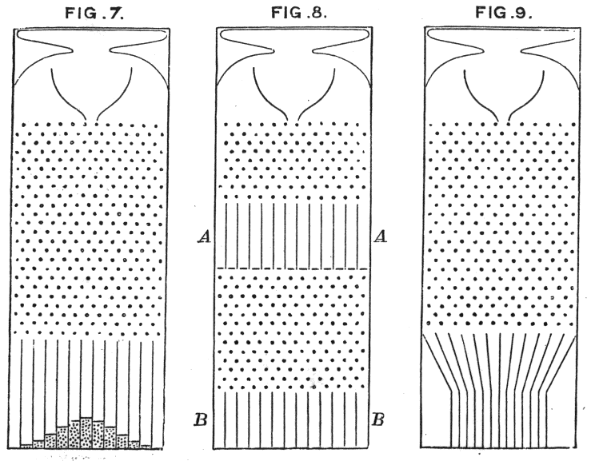
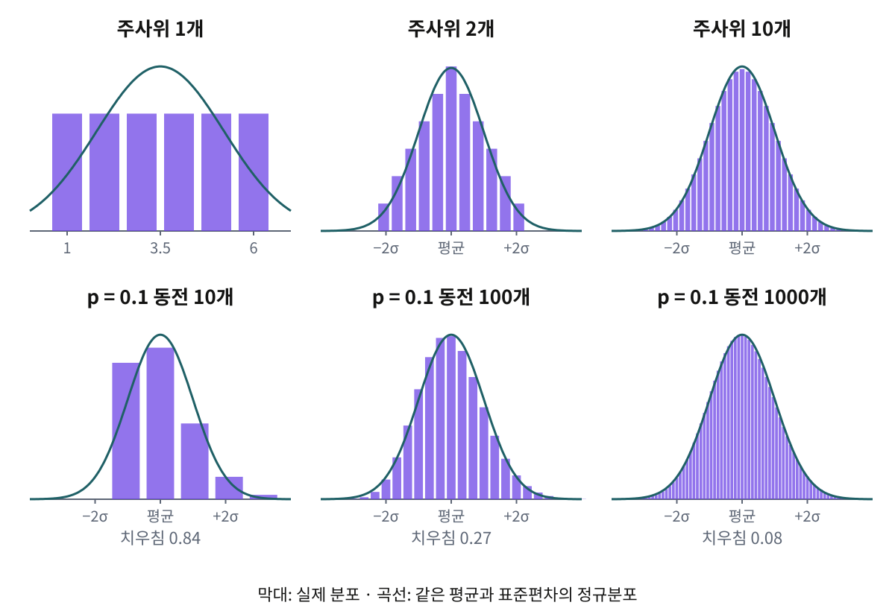
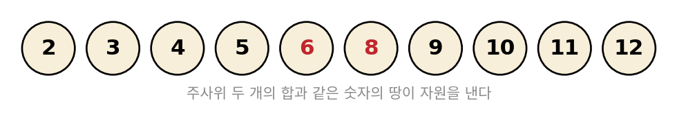
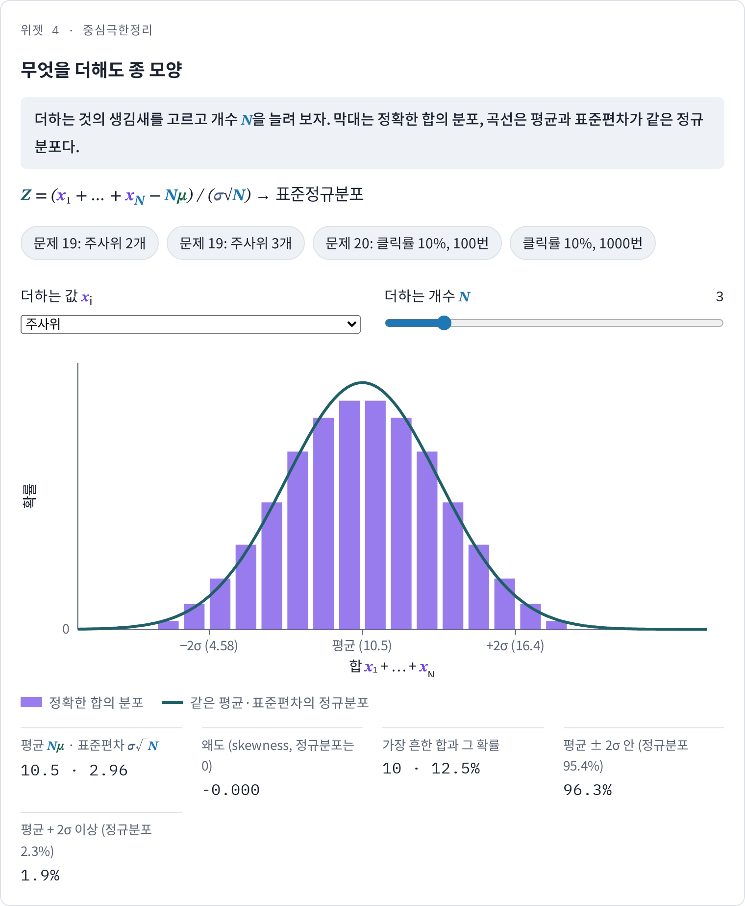
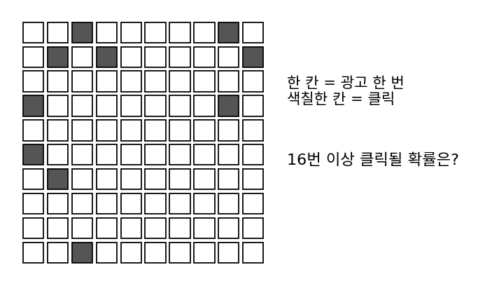
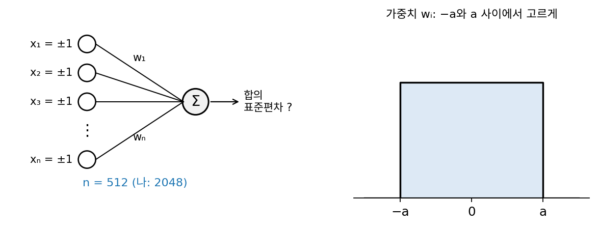

중심극한정리: 무엇을 더해도 종 모양
동전 100개를 던지면 앞면 개수는 50 근처에서 표준편차 5개만큼 흔들렸고, 앞면 개수의 분포를 그려 보면 가운데가 볼록한 종 모양이었다. 3072차원 노이즈의 노름 제곱 ‖x‖²도 3072 근처에서 같은 모양으로 흔들렸다. 둘 다 서로 독립인 값을 많이 더한 합이지만, 더한 값의 생김새는 전혀 다르다. 동전 하나는 0 아니면 1이고, 좌표 하나의 제곱은 0 근처에 잔뜩 몰리고 오른쪽으로 길게 늘어진 분포다. 생김새가 이렇게 다른 것을 더했는데 왜 합은 똑같은 종 모양이 될까? 여섯 면이 고른 주사위나, 열 번에 한 번만 앞면이 나오는 찌그러진 동전을 더해도 그럴까?
합이 왜 종 모양이 되는가 하는 물음은 실용적이기도 하다. 정확도가 얼마나 흔들리는지 따질 때 우리는 「평균에서 표준편차 두 배 안에 약 95%가 든다」는 셈을 자주 쓴다. 이 95%는 정확도의 분포가 종 모양일 때의 값인데, 표준편차만 알고 모양을 모른다면 무엇까지 말할 수 있을까?
역사: 관측 오차를 더하면
동전을 3,600번 던져 종 모양 곡선을 처음 이끌어 낸 드무아브르의 계산은 동전에만 통하는 이야기였다. 18세기 천문학자들은 같은 별의 위치를 여러 번 재어 평균을 냈는데, 관측값 하나의 오차는 망원경의 떨림, 공기의 일렁임, 눈금을 읽는 눈의 착각처럼 작은 원인 여럿이 더해진 것이었다. 원인마다 오차의 생김새가 다를 텐데, 평균을 내면 얼마나 믿을 수 있을까? 라플라스는 1810년 논문에서 오차 하나의 분포가 무엇이든, 그런 오차를 많이 더한 합은 종 모양에 가까워진다는 것을 보였다. 바로 전해인 1809년에는 가우스가 관측 오차가 종 모양을 따른다고 두고 최소제곱법을 정당화했는데, 그래서 이 곡선에는 가우스 분포라는 이름도 붙었다. 어떤 조건이면 이 결론이 빈틈없이 성립하는지는 1901년 러시아의 랴푸노프가 증명했다. 「중심」이라는 이름은 1920년 헝가리 출신 수학자 포여가 붙였는데, 확률론에서 중심이 되는 정리라는 뜻이었다.
1889년 영국의 골턴은 이 현상을 눈으로 볼 수 있는 장치로 보였다. 깔때기에서 떨어진 알갱이가 촘촘히 박힌 핀에 부딪힐 때마다 왼쪽이나 오른쪽으로 튀고, 바닥 칸에 쌓인 알갱이 더미는 종 모양이 된다. 핀 하나가 동전 하나 구실을 한다(왼쪽으로 튀면 뒷면, 오른쪽이면 앞면). 골턴은 사람의 키처럼 작은 유전 요인 여럿이 더해져 정해지는 양이 왜 종 모양으로 퍼지는지 설명하려고 이 장치를 썼고, 같은 책에 이 법칙을 그리스 사람들이 알았다면 신으로 모셨을 것이라고 적었다.


오차 분포를 몇 가지 정해서 컴퓨터로 만 번쯤 더해 보면 종 모양이 되는지 바로 보이잖아요.

1810년의 라플라스가 그렇게 확인하려면 무엇이 필요했을까요?
오차를 무작위로 만 번… 아, 주사위 같은 걸 손으로 굴려서 하나하나 적어야겠네요. 오차 열 개를 더한 합을 만 번이면 십만 번을 굴려야 해요.

정확한 분포를 셈으로 구할 수도 있어요. 다만 오차 둘을 더한 분포만 해도 두 오차가 낼 수 있는 값의 짝마다 확률을 곱해서 모두 더해야 하고, 오차가 셋, 넷으로 늘면 그 셈을 다시 되풀이해야 하죠. 그래서 라플라스는 계산 대신 증명으로 갔고, 80년 가까이 지난 골턴도 숫자 대신 알갱이를 떨어뜨리는 판으로 보여 줬어요.

증명도 그때 끝난 게 아니잖아요. 어떤 조건이면 성립하는지는 1901년에야 증명됐다고 했는데, 90년 동안 무엇이 빠져 있었던 거예요?

라플라스의 결론은 맞았지만, 더하는 오차 하나하나가 어떤 성질을 가져야 하는지를 빈틈없이 적지 못했어요. 오차가 지켜야 할 조건을 짚어 내는 데 한 세기 가까이 걸린 거예요.

그러면 생김새가 단순한 것부터 더해 보고 싶어요. 여섯 면이 고른 주사위를 몇 개쯤 더하면 종 모양이 보이기 시작할까요?
주사위를 더하면
주사위 하나는 1부터 6까지 모두 1/6로, 가운데가 볼록하기는커녕 납작하지만, 두 개를 더하면 가운데 합 7이 가장 흔해진다. 두 주사위를 빨강과 파랑으로 칠해 구별하면 미시상태는 6 × 6 = 36가지이고, 합이 7인 거시상태 뒤에는 (1, 6), (2, 5), …, (6, 1)의 6가지가 숨어 있는 반면 합이 2인 경우는 (1, 1) 하나뿐이다. 그래서 합의 분포는 1, 2, 3, 4, 5, 6, 5, 4, 3, 2, 1(36분의)의 삼각형이 된다. 세 개를 더하면 경우의 수가 1, 3, 6, 10, 15, 21, 25, 27, 27, 25, …(216분의)로 꼭대기가 둥글어지고, 열 개면 종 모양과 거의 구별되지 않는다. 동전에서 앞면 50개 뒤에 숨은 미시상태가 가장 많았던 것처럼, 가운데 합일수록 그 합을 만드는 눈의 조합이 많기 때문이다.
얼마나 가까운지 숫자로 보자. 종 모양(정규분포)이라면 평균에서 표준편차 하나 안에 68.3%, 두 배 안에 95.4%가 든다.
| 더한 주사위 수 | 평균 | 표준편차 | ±1 표준편차 안 | ±2 표준편차 안 |
|---|---|---|---|---|
| 1 | 3.5 | 1.71 | 66.7% | 100% |
| 2 | 7 | 2.41 | 66.7% | 94.4% |
| 10 | 35 | 5.40 | 68.7% | 95.0% |
| (정규분포) | 68.3% | 95.4% |
주사위는 원래 좌우가 대칭이라 쉽게 종 모양이 되는데, 한쪽으로 치우친 것은 어떨까? 광고를 보여 줬을 때 열 번에 한 번 클릭된다면, 클릭 여부는 앞면 확률 0.1인 동전과 같다. 이 동전 하나는 0이 90%, 1이 10%로 크게 치우쳐 있다. 치우친 정도를 재는 왜도 (분포가 한쪽으로 치우친 정도, skewness. 오른쪽 꼬리가 길면 양수, 좌우 대칭이면 0)는 동전 하나에서 2.67인데, 10개를 더하면 0.84, 100개면 0.27, 1000개면 0.08로 줄어든다. 더하는 개수가 100배가 될 때마다 왜도는 10분의 1로 줄어, 1/√N에 비례해 사라진다.

식과 위젯
이 관찰을 식으로 적어 보자. 서로 독립이고 분포가 같은 값 N개를 더한 합에서, 합의 평균을 빼고 합의 표준편차로 나눈다.
N이 커질수록 Z의 분포는 xᵢ가 원래 어떻게 생겼든 같은 표준정규분포에 다가간다. 이 성질을 중심극한정리 (더한 합의 분포는 종 모양이 된다는 정리, central limit theorem)라 한다. 분모의 σ√N은 동전 N개에서 본 앞면 개수의 표준편차 √N / 2와 같은 꼴이다(동전 하나의 σ = 1/2). 독립인 값을 더하면 분산이 더해지므로 N개 합의 분산은 Nσ², 표준편차는 σ√N이다. 큰 수의 법칙이 「평균은 참값으로 모인다」고 말한다면, 중심극한정리는 「참값 둘레에서 평균의 분포는 종 모양이고 표준편차는 σ/√N이다」라고 더 나아가 말한다. 단서는 셋이다. 값들이 서로 독립이어야 하고, 하나하나의 표준편차 σ가 무한하지 않아야 하며, 원래 분포가 많이 치우쳤다면 왜도가 1/√N으로 사라질 만큼 N이 커야 한다.
모양을 모를 때: 체비쇼프 부등식
종 모양을 믿을 수 없을 때, 표준편차 하나만으로 말할 수 있는 것도 있다. 1850~60년대 프랑스의 비에네메와 러시아의 체비쇼프가 보인 부등식에 따르면, 분포가 어떻게 생겼든 평균에서 표준편차의 k배 이상 벗어날 확률은 1/k² 이하다. 두 배(k = 2)라면 25% 이하, 세 배라면 11% 이하로, 어떤 분포에나 통하는 대신 넉넉한 상한이다. 동전 1만 개에서 앞면 개수가 5,000에서 100개(표준편차의 두 배) 이상 벗어날 확률은 체비쇼프로는 「25% 이하」까지만 말할 수 있지만, 실제 값은 4.7%다. 앞에서 본 베르누이가 6,500번이면 될 것을 25,550번으로 넉넉히 잡았던 것도 같은 종류의 헐거움이다. 반대로 「약 95%」라는 촘촘한 셈은 분포가 종 모양이라는 사실, 곧 중심극한정리에 기댄 것이다.
ML에서: 미니배치의 노이즈와 가중치 초기화
미니배치 그래디언트는 예제 B개의 그래디언트를 평균한 값이다. 예제 하나의 그래디언트는 어떤 모양이든 될 수 있지만, 평균의 표준편차는 1/√B로 줄고 모양은 종 모양에 가까워진다. 예제 하나의 그래디언트 성분이 왜도 2만큼 치우쳐 있어도(평균 1인 지수분포가 이 정도다), B = 32면 평균의 왜도는 0.35, B = 128이면 0.18이다. 확률적 경사하강의 노이즈를 종 모양(가우스) 노이즈로 보고 학습을 노이즈 섞인 스텝의 반복으로 다루는 관점은 여기서 출발한다.
신경망의 뉴런 하나는 입력 n개에 가중치를 곱해 더하므로, 그 합도 서로 독립인 항 n개의 합이다. 가중치를 무작위로 뽑아 학습을 시작하면, 합은 종 모양으로 흔들리고 그 표준편차는 √n에 비례한다. 입력이 많은 층일수록 합이 크게 흔들리고 층을 지날 때마다 그 효과가 곱해지므로, 가중치의 크기를 1/√n에 맞춰 뽑는다. 이 계산은 아래 문제 21에서 직접 해 본다.
평가 지표를 「정확도 82.0 ± 0.8%」처럼 표준편차와 함께 적고 두 배 범위를 95% 구간으로 읽는 것도 이 정리 덕분이다. 그래서 예제가 적거나, 정확도가 0%나 100%에 가까워 분포가 한쪽으로 치우친 경우에는 이 읽기가 틀어진다.
문제 19. 카탄의 빨간 숫자
보드게임 「카탄」에서는 주사위 두 개를 굴려 나온 합과 같은 숫자가 적힌 땅의 자원을 받는다. 6과 8은 빨간 글씨로 눈에 띄게 적혀 있고, 2와 12가 적힌 땅은 하나씩뿐이다. (가) 합이 7, 6, 2가 나올 확률을 각각 구하라. (나) 주사위를 세 개 굴린다면 가장 흔한 합과 그 확률은? (풀어 본 뒤 위젯 4의 「문제 19」 단추로 확인해 보자.)

합은 2부터 12까지 11가지인데, 그게 다 1/11씩 같은 확률이라면 6과 8만 빨갛게 적을 이유가 없잖아요. 합마다 확률이 다르다는 뜻 같아요.
두 주사위를 빨강, 파랑으로 칠해 볼까요. 둘이 낼 수 있는 결과는 모두 몇 가지고, 그중 합이 7인 건 몇 가지죠?

6 × 6 = 36가지요. 합이 7이면 (1, 6)부터 (6, 1)까지 6가지, 합이 2는 (1, 1) 하나뿐이에요. 7은 6/36 = 1/6, 6은 (1, 5)부터 (5, 1)까지 5/36, 2는 1/36이고요. 1/11씩이었다면 2가 7만큼 자주 나와야 했네요.

이 장 처음의 동전이랑 똑같네. 합이 거시상태고 두 눈이 미시상태야. 빨간 6과 8은 7 다음으로 잘 나오는 숫자라서 표시한 거고.

맞아요. 세 개라면요?

216가지를 다 늘어놓고 세면 합이 10이나 11인 게 각각 27가지라서 27/216 = 12.5%예요. 그런데 막대를 그려 보니 두 개일 때는 삼각형이었던 게 꼭대기가 둥글어졌어요.
가운데로 갈수록 그 합을 만드는 조합이 많아지니까요. 주사위를 더 보태면 삼각형이 점점 종 모양으로 둥글어집니다.

납작한 주사위가 합치니까 종 모양이 되는 게, 결국 가운데 합 뒤에 숨은 조합 수가 많아서였네요.
위젯 4에서 문제 19의 주사위 세 개 설정을 불러와 꼭대기가 얼마나 둥글어졌는지 보세요.

문제 20. 클릭률 10%: 넉넉한 상한과 종 모양
클릭률이 10%인 광고를 100번 보여 준다. 클릭은 서로 독립이라고 하자. (가) 클릭 수의 평균과 표준편차를 구하라. (나) (가)에서 구한 평균과 표준편차만 써서, 16번 이상 클릭될 확률의 상한을 체비쇼프 부등식으로 구하라. (다) 클릭 수가 평균 둘레에 종 모양(정규분포)으로 퍼진다고 보고 같은 확률을 근사해 구하라. (라) 정확한 값을 위젯 4의 「문제 20」 단추로 불러와 비교하고, 차이가 왜 나는지 말하라.


한 번 보여 줄 때 클릭은 앞면 확률 0.1인 동전이니까 분산이 0.1 × 0.9 = 0.09, 100번이면 9예요. 평균 10, 표준편차 3. 16은 평균보다 표준편차 두 개 위예요.
체비쇼프는 1/k²이니까 1/4, 25% 이하요. 종 모양이면 표준편차 두 배 위쪽 꼬리는 2.3%고요. 둘이 열 배나 차이 나네요.
체비쇼프는 어떤 분포에나 맞아야 하니까 넉넉할 수밖에 없어요. 이제 위젯에서 정확한 값을 불러와 볼까요?

4.0%예요. 종 모양 근사 2.3%보다 두 배 가까이 커요. 중심극한정리가 틀린 거예요?

정리에 붙은 단서를 떠올려 봐요. 클릭 하나는 0이 90%인 치우친 분포였죠. 100번을 더하면 왜도가 얼마나 남아 있었죠?
0.27이요. 아직 오른쪽 꼬리가 길어요. 그래서 위쪽 꼬리는 종 모양보다 두껍고, 반대로 4번 이하로 떨어질 확률은 2.4%밖에 안 될 거예요.
네. 1,000번 보여 주면 평균 100, 표준편차 9.5이고, 표준편차 두 배 위쪽이 2.8%, 아래쪽이 2.3%로 종 모양의 2.3%에 가까워져요. 왜도가 0.08로 줄었으니까요.
체비쇼프는 언제나 맞지만 헐겁고, 종 모양은 촘촘하지만 N이 충분히 커서 왜도가 사라졌을 때만 믿을 수 있는 거네요. 클릭률처럼 드문 일을 셀 때는 특히 조심해야겠어요.
문제 21. 입력이 네 배면 가중치는 절반
은닉층 뉴런 하나가 입력 n = 512개를 받아 합 w₁x₁ + … + wₙxₙ을 낸다. 입력 xᵢ는 +1과 −1이 반반이고, 가중치 wᵢ는 −a와 a 사이에서 고르게 뽑으며, 모두 서로 독립이다. (가) 합의 표준편차가 1이 되는 a를 구하라. (나) 같은 a를 그대로 두고 입력을 n = 2048개로 늘리면 합의 표준편차는? (다) 합은 어떤 모양으로 흔들리는가?

항 하나 wᵢxᵢ는 xᵢ가 ±1이라 wᵢ와 같은 크기로 흔들려요. −a와 a 사이의 고른 분포는 분산이 (2a)²/12 = a²/3이고, 512개를 더하면 512a²/3. 이게 1이 되려면 a = √(3/512) ≈ 0.0765예요.
같은 a로 2048개를 더하면 분산이 네 배니까 표준편차는 두 배, 2예요. 층마다 이렇게 두 배씩 커지면 열 층만 지나도 1,024배네요.
그래서 입력이 많아지면 a를 줄여요. 입력이 네 배면 a는 절반, √(3/2048) ≈ 0.0383. 가중치 크기를 1/√n에 맞추는 초기화는 1998년 르쿤 등이 정리한 학습 요령에 이미 있고, 2010년 글로로와 벤지오가 층을 깊게 쌓는 경우로 넓혔어요. 모양은요?

고르게 뽑은 가중치에 ±1을 곱한 거라 종 모양은 아닐 것 같은데요. 코드로 2만 번 뽑아 봤더니… 표준편차 1.00, 표준편차 두 배 안에 95.4%예요. 종 모양이랑 똑같아요.
항 하나는 납작해도 512개를 더하면 종 모양이죠. 이번엔 서로 독립이라는 단서를 빼 볼까요. 512개 항이 모두 똑같은 값이라면요?

그러면 합은 512 × 항 하나라서… 표준편차가 512 × 0.0442 ≈ 22.6, √512배인 22.6배나 커져요. 모양도 고른 분포 그대로고요. 2만 번 뽑아도 정말 그렇게 나와요.

서로 독립이어야 항마다 평균에서 벗어난 양이 서로 상쇄돼서 합의 표준편차가 √n으로만 크고, 종 모양도 나오는 거였구나.

그런데 실제 데이터는 완전히 독립도 아니고 완전히 같지도 않잖아요. 조금씩 닮은 값을 더하면 어떻게 돼요?
좋은 물음이에요. 이 장의 셈은 모두 독립을 깔고 있었다는 것만 기억해 두죠.